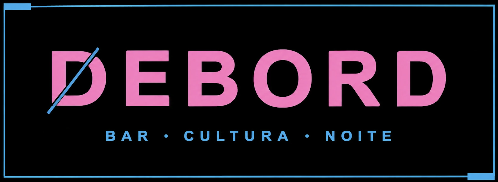

Um ponto fora do roteiro
Um espaço de encontro para quem busca fugir do convencional, descobrir novas atmosferas e viver a noite com mais personalidade.

BAR • CULTURA • NOITE
Coquetelaria autoral, atitude urbana e cultura noturna para criar experiências que vão além do copo no coração do Centro de Porto.
O DEBORD é um ponto de encontro para quem busca mais do que o habitual. Inspirado na atitude urbana e na atmosfera dos bares alemães, combina coquetelaria autoral, estética contemporânea e cultura noturna em um ambiente alternativo, onde cada detalhe contribui para uma experiência com identidade própria. Um convite para sair do automático, encontrar novas perspectivas e viver a noite do seu jeito.
VAMOS FESTEJAR ↗Um espaço de encontro para quem busca fugir do convencional, descobrir novas atmosferas e viver a noite com mais personalidade.
Clássicos bem executados, combinações criativas e drinks com personalidade, onde técnica e atitude se encontram em cada copo.
Uma atmosfera urbana e alternativa, inspirada na cultura dos bares alemães, feita para boas conversas, novas conexões e noites que escapam do óbvio.
Conte um pouco sobre seu evento e descubra um formato de bar para a sua noite.
CONSULTAR DISPONIBILIDADE ↗Eventos sociais • celebrações • experiências privadas